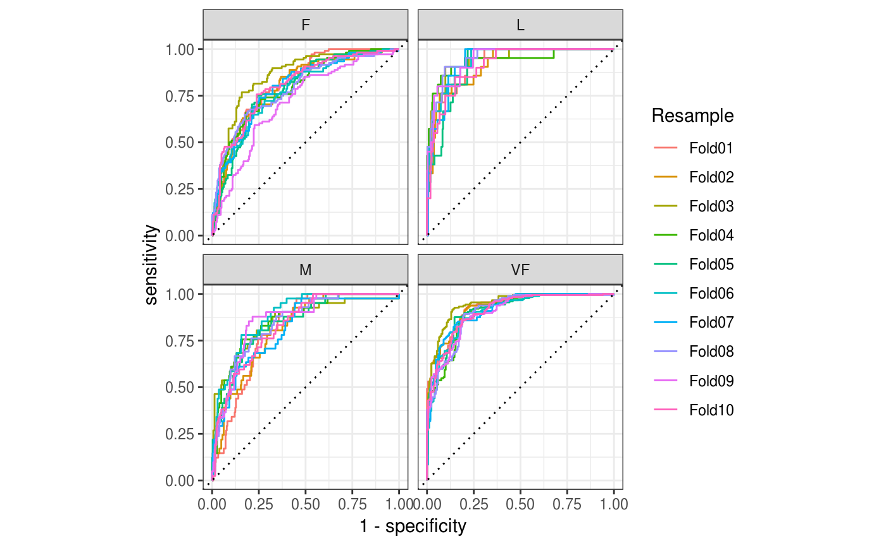

Overview
yardstick is a package to estimate how well models are working using tidy data principles. See the package webpage for more information.
Installation
To install the package:
install.packages("yardstick")
# Development version:
devtools::install_github("tidymodels/yardstick")Two class metric
For example, suppose you create a classification model and predict on a new data set. You might have data that looks like this:
library(yardstick)
library(dplyr)
head(two_class_example)
#> truth Class1 Class2 predicted
#> 1 Class2 0.00359 0.996411 Class2
#> 2 Class1 0.67862 0.321379 Class1
#> 3 Class2 0.11089 0.889106 Class2
#> 4 Class1 0.73516 0.264838 Class1
#> 5 Class2 0.01624 0.983760 Class2
#> 6 Class1 0.99928 0.000725 Class1You can use a dplyr-like syntax to compute common performance characteristics of the model and get them back in a data frame:
metrics(two_class_example, truth, predicted)
#> # A tibble: 2 × 3
#> .metric .estimator .estimate
#> <chr> <chr> <dbl>
#> 1 accuracy binary 0.838
#> 2 kap binary 0.675
# or
two_class_example %>%
roc_auc(truth, Class1)
#> # A tibble: 1 × 3
#> .metric .estimator .estimate
#> <chr> <chr> <dbl>
#> 1 roc_auc binary 0.939Multiclass metrics
All classification metrics have at least one multiclass extension, with many of them having multiple ways to calculate multiclass metrics.
data("hpc_cv")
hpc_cv <- as_tibble(hpc_cv)
hpc_cv
#> # A tibble: 3,467 × 7
#> obs pred VF F M L Resample
#> <fct> <fct> <dbl> <dbl> <dbl> <dbl> <chr>
#> 1 VF VF 0.914 0.0779 0.00848 0.0000199 Fold01
#> 2 VF VF 0.938 0.0571 0.00482 0.0000101 Fold01
#> 3 VF VF 0.947 0.0495 0.00316 0.00000500 Fold01
#> 4 VF VF 0.929 0.0653 0.00579 0.0000156 Fold01
#> 5 VF VF 0.942 0.0543 0.00381 0.00000729 Fold01
#> 6 VF VF 0.951 0.0462 0.00272 0.00000384 Fold01
#> 7 VF VF 0.914 0.0782 0.00767 0.0000354 Fold01
#> 8 VF VF 0.918 0.0744 0.00726 0.0000157 Fold01
#> 9 VF VF 0.843 0.128 0.0296 0.000192 Fold01
#> 10 VF VF 0.920 0.0728 0.00703 0.0000147 Fold01
#> # … with 3,457 more rows
# Macro averaged multiclass precision
precision(hpc_cv, obs, pred)
#> # A tibble: 1 × 3
#> .metric .estimator .estimate
#> <chr> <chr> <dbl>
#> 1 precision macro 0.631
# Micro averaged multiclass precision
precision(hpc_cv, obs, pred, estimator = "micro")
#> # A tibble: 1 × 3
#> .metric .estimator .estimate
#> <chr> <chr> <dbl>
#> 1 precision micro 0.709Calculating metrics on resamples
If you have multiple resamples of a model, you can use a metric on a grouped data frame to calculate the metric across all resamples at once.
This calculates multiclass ROC AUC using the method described in Hand, Till (2001), and does it across all 10 resamples at once.
hpc_cv %>%
group_by(Resample) %>%
roc_auc(obs, VF:L)
#> # A tibble: 10 × 4
#> Resample .metric .estimator .estimate
#> <chr> <chr> <chr> <dbl>
#> 1 Fold01 roc_auc hand_till 0.813
#> 2 Fold02 roc_auc hand_till 0.817
#> 3 Fold03 roc_auc hand_till 0.869
#> 4 Fold04 roc_auc hand_till 0.849
#> 5 Fold05 roc_auc hand_till 0.811
#> 6 Fold06 roc_auc hand_till 0.836
#> 7 Fold07 roc_auc hand_till 0.825
#> 8 Fold08 roc_auc hand_till 0.846
#> 9 Fold09 roc_auc hand_till 0.828
#> 10 Fold10 roc_auc hand_till 0.812Autoplot methods for easy visualization
Curve based methods such as roc_curve(), pr_curve() and gain_curve() all have ggplot2::autoplot() methods that allow for powerful and easy visualization.

Contributing
This project is released with a Contributor Code of Conduct. By contributing to this project, you agree to abide by its terms.
For questions and discussions about tidymodels packages, modeling, and machine learning, please post on RStudio Community.
If you think you have encountered a bug, please submit an issue.
Either way, learn how to create and share a reprex (a minimal, reproducible example), to clearly communicate about your code.
Check out further details on contributing guidelines for tidymodels packages and how to get help.